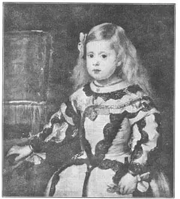
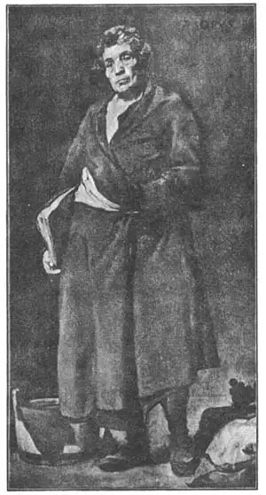
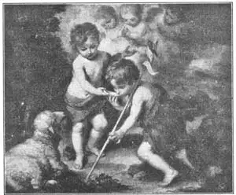

20
SPEAKING OF SPANIARDS
话说西班牙画家

THIS chapter is about Spain. But I’m going to begin by telling you about Crete, which hasn’t anything at all to do with Spain.
Crete is an island south of Greece. It belongs to Greece and the people of Crete speak the Greek language. Sometime about the middle of the fifteen hundreds (nobody knows just when) there was born in Crete a baby who was to become a celebrated painter. You have never heard of his name and couldn’t pronounce it if you had. I’ll tell it to you just to show you, but don’t try to remember it, for this painter is never spoken of except by his nickname. Here is his real name—Domenico Theotocopuli.
He was a mysterious kind of man and no one knows very much about his life. He seems to have left Crete and gone to Venice to study art under the great Titian. The next we hear of him he has bobbed up in Spain and settled in the city of Toledo. In Spain he remained and in Spain he died in 1614, but he always thought of himself as a Greek rather than a Spaniard, and he signed his most important paintings in Greek letters. The Spaniards could hardly be expected to call him Domenico Theotocopuli any more than you are expected to. They just called him “that Greek fellow” or “the Greek,” which in Spanish is El Greco.
El Greco painted pictures that are so different from other artists’ paintings that you may think they are not beautiful when you first see them. All his people are too long and thin to be like real people, and the colors are used differently from the colors in most paintings.
When you see a picture by El Greco you must remember that he is not trying to make you see a picture of things as they would look in a photograph. His paintings of men and scenes represent the spirit (or the idea), which is a different thing from what you would see with your eyes if you looked at real men and scenes. This is hard for many people to understand. They think a painting should always show you exactly what the real things look like. But a camera can do that just as well as an artist, and so many artists sometimes paint, like El Greco, not what they see but what they think will look best as a picture.
When El Greco died the man who was to become the greatest Spanish painter of all was still only a boy of fourteen. It seems strange to us that he is called by his mother’s name instead of by his father’s. It was just an old Spanish custom. I don’t expect you to remember this painter’s entire name, because it was Diego Rodriguez de Silva y Velasquez. What you have to remember is the Velasquez part, for that is what he was called. Velasquez (Vay-las’keth) was born in the city of Seville in 1599, the very same year that Van Dyck was born in Holland.
When Velasquez had grown up and had painted for some time he decided to go to the capital of Spain, Madrid. The king saw some of his work and liked it, and so the next year Velasquez was sent for and moved to Madrid for good. There he became the king’s painter. We know very well what this king of Spain looked like, because Velasquez painted many pictures of him. That was one of the duties of the king’s painter. The king was Philip IV. The first thing you notice about Philip is his very large mustaches which curl up to his eyes. They must have been a nuisance, those mustaches, for Philip had to put leather cases on them at night to keep them shaped right. I wonder what the king looked like when he got his fancy mustaches caught in the rain!

No.20-1 THE PRINCESS MARGUERITE（《玛格丽特公主》）
VELASQIUEZ（委拉斯开兹 作）
Almost all the portraits of the king and his nobles show a wide stiff white collar that sticks out from around each man’s neck. King Philip was very proud of this kind of collar, and for a very special reason—he invented it himself! He was so proud of his new invention that hehad a great celebration after which there was a solemn procession or parade to church to thank God for such a blessing.
Here is a portrait of a little girl that Velasquez painted, the Princess Marguerite. She was a daughter of King Philip.
Velasquez was very different from El Greco in his painting. El Greco painted things as he wanted them to look, to give his idea of them. El Greco used his imagination instead of putting down on canvas just what he saw with his eyes. But Velasquez painted objects to look like the real objects. We call a painter who does this a realist, because he paints only what he really sees.
When Rubens came to Madrid, the king asked Velasquez to show him the art treasures of Spain. Rubens and Velasquez got along together very well. Rubens admired Velasquez’s paintings and Velasquez admired the work of Rubens.

No.20-2 AESOP（《伊索》）
VELASQUEZ（委拉斯开兹 作）
Velasquez wanted to see the famous paintings of the great Italian artists and so he got permission from the king to make trips to Italy, where he made copies of some of the paintings of Tintoretto, Michelangelo, and Titian.
And here is a picture of your old friend AEsop, who wrote the fable of the Fox and the Grapes, the Dog in the Manger, and other famous fables.
Of course the picture is not of the real AEsop. Velasquez just painted the picture as he thought AEsop might have looked, for AEsop himself lived two thousand years before Velasquez.
Velasquez has been called the painters’ painter, because so many painters have admired and praised his work. He was the greatest of the Spanish painters, greater than El Greco and greater than the next Spanish painter I’m going to tell you about, whose name was Murillo (Moo-reel’yo). Murillo, like Velasquez, was born in Seville. He went to Madrid, where Velasquez encouraged him in his painting and got him permission to study the paintings in the king’s picture gallery. After two years there, Murillo went back to live in Seville. He was still poor and unknown.
Now, about that time the Franciscan friars, or monks, in Seville were looking for an artist who would decorate one of their buildings with paintings. They wanted to get some famous artist, but they had too little money to pay a famous artist’s prices. So they decided to let Murillo do the work. Murillo painted eleven pictures for the friars and every one liked them so much that he was asked to do more pictures than he could possibly paint.
Then Murillo painted eleven pictures for another building. These were even better than the first eleven, and made him famous.
Another picture that Murillo painted has a story told about it that shows how lifelike it is. The picture is of a priest with a spaniel at his feet, and the story is that when a live dog saw the painted spaniel he thought it was a real spaniel and growled at it. It reminds us of the story of the birds who pecked the grapes in Zeuxis’s picture. I don’t believe it can be a true story because a dog can’t be fooled by a picture the way he can by a mirror.
Murillo was very good at painting babies and Madonnas. His Madonnas generally have dark hair and eyes. On the next page is a picture that all children seem to like. It shows the baby Christ and little Saint John getting a drink of water out of a sea-shell. The little lamb in the corner of the picture looks as if he were thirsty and wanted a drink, too.

No.20-3 THE CHILDREN OF THE SHELL（《捡贝壳的小孩》）
MURILLO（牟利罗 作）
Courtesy of The University Prints
Murillo was so successful at selling his pictures that he made a large fortune, but he was a very generous man and gave much money to the poor. He had once been poor himself, and he knew how much they needed help.
One day when he was old he was getting up on a scaffolding to paint the higher parts of a large picture, when he stumbled and fell. lie was so badly hurt that he never got well and the picture was left unfinished.
The people of Seville never forgot their famous painter and even to-day in Seville they call any beautiful picture a “Murillo.”
【中文阅读】
这一章是关于西班牙的。但是我想首先给你们介绍一下与西班牙没有任何瓜葛的克里特岛。它是位于希腊南部的一座岛屿，属于希腊，岛上的居民都说希腊语。大约15世纪中期（没有人知道确切的时间），一个婴儿在克里特岛诞生了，他后来成了声名远扬的画家。你肯定从没听说过他的名字，即便听过，也不会读。我来告诉你吧，但只想让你了解一下，不要费心去记，因为人们只叫他昵称。他的本名是多梅尼科·狄奥托科普洛斯。
多梅尼科·狄奥托科普洛斯是那种神秘型的人物，人们对他的生平知之甚少。他似乎后来离开克里特岛去了威尼斯，在大画家提香门下学习绘画。接着，我们又听说他去了西班牙，在托莱多城定居。此后，他就一直待在西班牙，于1614年在那儿去世。不过，他一直都认为自己是希腊人，而不是西班牙人，他在重要的画上都用希腊字母署名。和我们现在一样，西班牙人从不叫他多梅尼科·狄奥托科普洛斯，而就叫他埃尔·格列柯，意思是“那个希腊人”或者“希腊人”。
埃尔·格列柯的绘画与其他画家的绘画大不相同。第一眼看上去，你可能会觉得他的画并不好看。他画中的人物都又长又瘦，看起来一点不像真人，画的颜色也和大部分绘画不一样。
欣赏埃尔·格列柯的绘画，一定得记住，他的画向我们展示的景物不像照片中的景物。他画中的人物和景色都代表着一种精神（或者说观念）。这与用肉眼看真人实景时的感觉是不一样的。很多人很难理解这一点。他们认为一幅画就应该像我们展示事物的原样。要是这样的话，照相机也可以像画家一样做得好。所以，许多画家，像埃尔·格列柯一样，并不画他们看到的事物，而是按照他们认为美的样子绘画。
埃尔·格列柯去世时，一位即将成为西班牙最伟大画家的男孩还只有14岁。奇怪的是，他没跟父姓，而随母姓。这是一种古老希腊习俗。我不期待你记住他的全名，因为太长了，叫迪迭戈·罗德里格斯·德席尔瓦·委拉斯开兹。你只要记住他叫委拉斯开兹就行了，因为人们总是这么叫他。委拉斯开兹1599年出生在西班牙的塞维利亚，与荷兰画家凡·戴克刚好同一年出生。
委拉斯开兹长大后，从事了一段时间的绘画，后来他决定前往西班牙首都马德里。当时的西班牙国王看过他的一些作品后，十分欢喜，于是，第二年委拉斯开兹就被召去了马德里，并在那里定居下来。他成为国王的御用画师。我们都很清楚这位西班牙国王长什么样，因为委拉斯开兹为他画过许多画像。这是国王御用画家的职责之一。这个国王就是腓力四世。看腓力四世的画像时，你第一眼看到的就是他那一直翘到眼角的大胡须。这些胡须真够麻烦，因为每天晚上睡觉时，腓力四世都得用皮套套住胡须，以防变形。我真好奇，要是他这些精心卷好的胡须淋了雨会变成啥样呢？
委拉斯开兹在几乎所有王公贵族的肖像画里，都在他们的脖子上画有一个宽宽的、硬硬的白衣领。这种白领是腓力四世引以为豪的东西，因为那就是他自己发明的。他为自己这个新发明而自豪，为此他还特地举行了声势浩大的庆祝活动，活动结束后又列队庄严地迈向教堂，去感谢上帝的恩赐。
图20-1是委拉斯开兹为玛格丽特公主画的画像。玛格丽特是腓力四世的女儿。
委拉斯开兹与埃尔·格列柯的绘画风格很不一样。埃尔·格列柯按照自己想要的效果绘画，并融入自己的思想。他更多的是发挥自己的想象力，而不是简单地在帆布上画下自己眼睛所看到的事物。但是，委拉斯开兹却完全依照物体真实的样子画画。我们把他这种画家叫做写实主义画家，因为他们只画他们真正看到的东西。
当鲁本斯到马德里时，腓力四世让委拉斯开兹向鲁本斯展示西班牙的艺术瑰宝。鲁本斯和委拉斯开兹相处得十分融洽。鲁本斯非常欣赏委拉斯开兹的绘画，委拉斯开兹也很欣赏鲁本斯的作品。
委拉斯开兹希望能亲眼看看意大利大画家的著名作品，所以他在得到国王的许可后，动身去了意大利。在那里，他临摹了丁托列托、米开朗基罗和提香的一些作品。
图20-2是我们的老朋友伊索，他写过《狐狸与葡萄》、《马槽中的狗》等著名的寓言。
当然，画中的人物并不是真的伊索，委拉斯开兹只是按照自己想象的样子来描画的，因为伊索活在委拉斯开兹两千年前。
委拉斯开兹被称作“画家中的画家”，因为有许多画家都非常欣赏并称赞他的作品。他是西班牙最伟大的画家，比埃尔·格列柯更了不起，甚至比接下来我要向大家介绍的西班牙画家牟利罗还要了优秀。像委拉斯开兹一样，牟利罗也出生在塞维利亚，后来也去了马德里。在那里，委拉斯开兹鼓励他画画，还允许他到国王的画室学习绘画。两年之后，牟利罗回到了塞维利亚，但仍然一贫如洗，毫无名气。
那时候刚好方济各修会的修士们正在找一位画家用绘画来装饰他们的一栋建筑。他们想找一个有名气的画家，但他们没有足够的钱，所以根本就请不起那些名画家。于是，他们决定让牟利罗来做这份工作。牟利罗为这座修道院画了十一幅画。大家都很喜欢这些画，所以越来越多的人请他画画，工作多得让他应接不暇。
接着，牟利罗又为另一座建筑物画了十一幅画，比之前那十一幅更好，这使得他一举成名。
牟利罗还画了一幅画（图20-3），这幅画栩栩如生，关于它还有个小故事。画中 是一个神父，在他脚边站着一只西班牙猎犬。据说，有一条小狗看到画里的西班牙猎犬后以为是真的，竟然朝着画“汪汪”地叫个不停。这使我们想起了鸟儿啄宙克西斯画中葡萄的故事了。不过，我认为这只小狗的故事肯定不是真的，因为小狗虽然会对着镜子中的自己汪汪叫，但绝不会被一幅画所愚弄。
牟利罗非常擅长画婴儿和圣母玛利亚。他画的圣母通常都有着乌黑的头发和眼睛。下面的一幅画相信所有小朋友都非常喜欢。它描绘的是小基督和小圣约翰用贝壳喝水的样子。画面的角落上有一只小羊羔，它看起来好像也很渴，也想喝上一口水。
牟利罗的画卖价不错，赚了一大笔钱。他也非常大方，慷慨施舍穷人。他自己曾经很穷，所以他知道穷人是多么需要帮助。
在他年老时，有一天他爬到一个脚手架上去画一幅画的上半部分，结果一不小心摔了下来。他伤得很重，以后再没好起来，那幅画也就一直没有画完。
塞维利亚的人们从来都不曾忘记他们的著名画家，甚至到了今天，他们仍然把任何好看的画都叫做“牟利罗”。